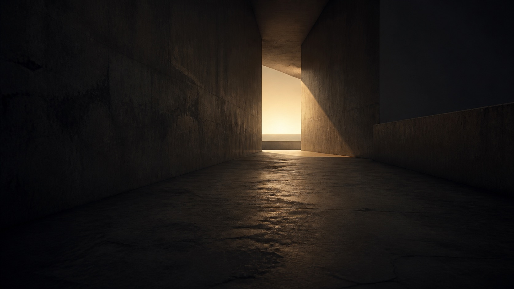

الذاكرة السورية والمسؤولية
الذاكرة مسؤولية
حفظ الذاكرة ليس عملاً عاطفياً فقط، بل هو جزء من العدالة ومنع تكرار الجريمة.
الذاكرة ليست عاطفة فقط
يتعامل هذا الموقع مع الذاكرة السورية كمسؤولية إنسانية ووثائقية. ليست الذاكرة هنا استعادة للماضي فقط، بل طريقة لفهم معنى العدالة وحماية المستقبل من التكرار.
حين تُحفَظ الذاكرة بجدية، تصبح شاهداً على المسؤولية، ومساحة تمنع الصمت من أن يتحول إلى نسيان.
العدالة
حين يصبح التوثيق شكلاً من العدالة
عندما تُصان الذاكرة، لا تبقى الحكاية معلقة في الشعور وحده. تصبح جزءاً من مسؤولية أوسع: الاعتراف، الفهم، ومنع اختفاء المعنى.
المسؤولية
كي لا يتكرر ما حدث
الغاية ليست صناعة أثر بصري صادم، بل بناء مساحة جادة وإنسانية تقول إن الذاكرة يمكن أن تكون طريقاً نحو العدالة، وأن حفظها يساعد على منع تكرار الجريمة.
